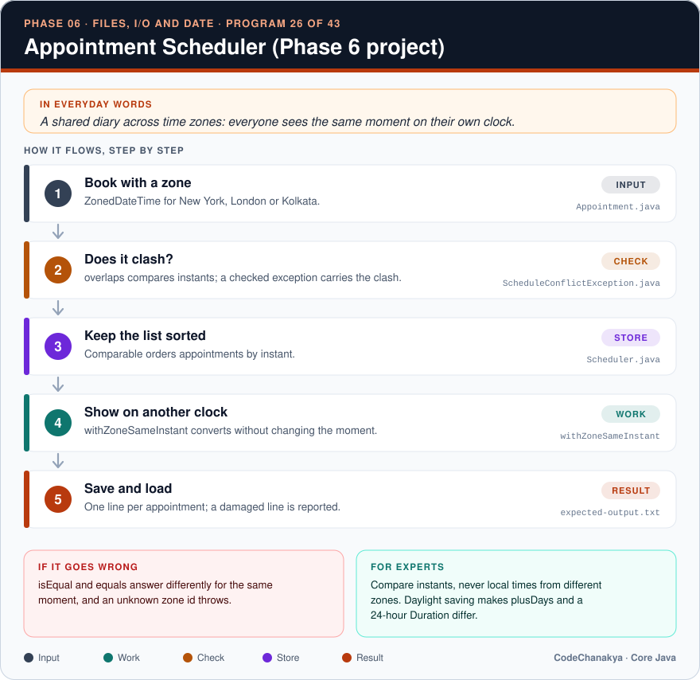

Phase 06 · Files, I/O and Date · Program 26 of 43
Appointment Scheduler
The problem
A team in New York, London and Kolkata books meetings. Nobody may be double-booked, everyone wants the agenda on their own clock, and the bookings must survive the program closing.
This Phase 6 project combines time zones, daylight saving, a checked exception, Comparable and saving to a file with careful error reports.
See the flow
The whole program as one picture. Read it top to bottom; the colour of each card says what kind of step it is.


If you are new to coding
A shared diary across time zones: everyone sees the same moment on their own clock.
If you are learning
Follow the numbered cards from top to bottom. Open the file named on each card, run the program, and match its output to the last card.
If you are experienced
Compare instants, never local times from different zones. Daylight saving makes plusDays and a 24-hour Duration differ.
Text version of the flow
- Book with a zone (input): ZonedDateTime for New York, London or Kolkata.
- Does it clash? (check): overlaps compares instants; a checked exception carries the clash.
- Keep the list sorted (store): Comparable orders appointments by instant.
- Show on another clock (work): withZoneSameInstant converts without changing the moment.
- Save and load (result): One line per appointment; a damaged line is reported.
Read in this order
- 1Appointment.javaZonedDateTime, Duration and the file line format.
- 2ScheduleConflictException.javaA checked exception that carries the clash.
- 3Scheduler.javaA sorted list, zone conversion, save and load.
- 4Main.javaFrom zones to a damaged file.
The code
package com.codechanakya.scheduler; import java.time.Duration; import java.time.ZonedDateTime; /** * A booking: a title, when it starts (with its time zone) and how long it lasts. * * The start is a ZonedDateTime, so "10:00 in New York" is remembered together with the * rules of New York. Everything that compares two appointments goes through toInstant(), * the one absolute moment on the timeline, because 10:00 in New York and 14:00 in London * can be the same moment and local clock times cannot be compared directly. */ public class Appointment implements Comparable<Appointment> { private final String title; private final ZonedDateTime start; private final Duration length; public Appointment(String title, ZonedDateTime start, Duration length) { if (length.isZero() || length.isNegative()) { throw new IllegalArgumentException("An appointment needs a positive length"); } this.title = title; this.start = start; this.length = length; } public String getTitle() { return title; } public ZonedDateTime getStart() { return start; } public Duration getLength() { return length; } /** The end, found by adding exact elapsed time, so it stays right across a clock change. */ public ZonedDateTime getEnd() { return start.plus(length); } /** True when the two appointments share any time. One ending exactly as another starts is fine. */ public boolean overlaps(Appointment other) { return start.toInstant().isBefore(other.getEnd().toInstant()) && other.start.toInstant().isBefore(getEnd().toInstant()); } @Override public int compareTo(Appointment other) { return start.toInstant().compareTo(other.start.toInstant()); } /** One line for the data file: title|start|minutes. ZonedDateTime.toString() already includes the zone. */ public String toLine() { return title + "|" + start + "|" + length.toMinutes(); } /** The reverse of toLine(). Throws an unchecked exception when the line is not in that layout. */ public static Appointment fromLine(String line) { String[] parts = line.split("\\|"); if (parts.length != 3) { throw new IllegalArgumentException("expected 3 parts but found " + parts.length); } return new Appointment(parts[0], ZonedDateTime.parse(parts[1]), Duration.ofMinutes(Long.parseLong(parts[2]))); } }
package com.codechanakya.scheduler; import java.io.IOException; import java.nio.charset.StandardCharsets; import java.nio.file.Files; import java.nio.file.Path; import java.time.ZoneId; import java.time.ZonedDateTime; import java.time.format.DateTimeFormatter; import java.util.ArrayList; import java.util.Collections; import java.util.List; import java.util.Locale; /** Keeps appointments in time order, refuses overlaps, and saves them to a text file. */ public class Scheduler { /** Weekday, date, 24-hour time, the offset from UTC and the zone name. */ private static final DateTimeFormatter SHOWN = DateTimeFormatter.ofPattern("EEE dd MMM HH:mm xxx '['VV']'", Locale.ENGLISH); private final List<Appointment> appointments = new ArrayList<>(); private final List<String> loadProblems = new ArrayList<>(); public void add(Appointment wanted) throws ScheduleConflictException { for (Appointment existing : appointments) { if (existing.overlaps(wanted)) { throw new ScheduleConflictException(wanted, existing); } } appointments.add(wanted); Collections.sort(appointments); // Appointment is Comparable by moment in time } public List<Appointment> all() { return Collections.unmodifiableList(appointments); } /** * The agenda as text, with every start shown on the clocks of one zone. * withZoneSameInstant keeps the moment and changes only how it is displayed. */ public List<String> agendaIn(ZoneId zone) { List<String> lines = new ArrayList<>(); for (Appointment appointment : appointments) { ZonedDateTime local = appointment.getStart().withZoneSameInstant(zone); lines.add(local.format(SHOWN) + " " + appointment.getTitle() + " (" + appointment.getLength().toMinutes() + " min)"); } return lines; } public void save(Path file) throws IOException { List<String> lines = new ArrayList<>(); for (Appointment appointment : appointments) { lines.add(appointment.toLine()); } Files.write(file, lines, StandardCharsets.UTF_8); } /** Loads a file. Lines that cannot be read are skipped and listed in getLoadProblems(). */ public static Scheduler load(Path file) throws IOException { Scheduler scheduler = new Scheduler(); List<String> lines = Files.readAllLines(file, StandardCharsets.UTF_8); for (int i = 0; i < lines.size(); i++) { try { scheduler.add(Appointment.fromLine(lines.get(i))); } catch (ScheduleConflictException e) { scheduler.loadProblems.add("line " + (i + 1) + ": " + e.getMessage()); } catch (RuntimeException e) { // DateTimeParseException, NumberFormatException and IllegalArgumentException all end up here. scheduler.loadProblems.add("line " + (i + 1) + ": could not read (" + e.getClass().getSimpleName() + ")"); } } return scheduler; } public List<String> getLoadProblems() { return loadProblems; } }
Only the key files are shown. The rest are in the repository.
Run it
$ ./run.sh --check
--- One moment, three clocks ---
New York: 2026-03-09T10:00-04:00[America/New_York]
London : 2026-03-09T14:00Z[Europe/London]
Kolkata : 2026-03-09T19:30+05:30[Asia/Kolkata]
Same Instant in UTC: 2026-03-09T14:00:00Z
--- Booking across zones ---
Booked "Stand-up"
Refused "Design review" overlaps "Stand-up"
Booked "Client call"
Booked "Retro"
--- The same agenda on two clocks ---
New York:
Mon 09 Mar 10:00 -04:00 [America/New_York] Stand-up (30 min)
Mon 09 Mar 11:00 -04:00 [America/New_York] Client call (60 min)
Tue 10 Mar 15:00 -04:00 [America/New_York] Retro (60 min)
Kolkata:
Mon 09 Mar 19:30 +05:30 [Asia/Kolkata] Stand-up (30 min)
Mon 09 Mar 20:30 +05:30 [Asia/Kolkata] Client call (60 min)
Wed 11 Mar 00:30 +05:30 [Asia/Kolkata] Retro (60 min)
--- Clock changes ---
2:30 on 8 March does not exist in New York, so Java gives: 2026-03-08T03:30-04:00[America/New_York]
1:30 on 1 November happens twice. Default (earlier): 2026-11-01T01:30-04:00[America/New_York]
The later one: 2026-11-01T01:30-05:00[America/New_York]
Saturday 09:00 plusDays(1) : 2026-03-08T09:00-04:00[America/New_York]
Saturday 09:00 plus 24 hours : 2026-03-08T10:00-04:00[America/New_York]
Hours in 8 March in New York : 23
--- Saving and loading ---
| Stand-up|2026-03-09T10:00-04:00[America/New_York]|30
| Client call|2026-03-09T20:30+05:30[Asia/Kolkata]|60
| Retro|2026-03-10T15:00-04:00[America/New_York]|60
Loaded 3 appointments, 0 problems
Every start time survived the round trip: true
--- A damaged file ---
Loaded 4 appointments
Skipped line 5: could not read (IllegalArgumentException)
Skipped line 6: could not read (DateTimeParseException)
Skipped line 7: "Overlap" overlaps "Stand-up"
Skipped line 8: could not read (NumberFormatException)
OK: output matches expected-output.txt
This is the real output from OpenJDK 21.0.13 on Linux. It has not yet been run on Java 25, Windows or macOS.
Try it yourself
- BeginnerBook a meeting in London.
- BeginnerPrint every end time.
- BeginnerPrint the time between two meetings.
- IntermediateFind appointments on a local date.
- IntermediateCancel an appointment.
- ChallengeFind the first free slot.
Hints and solutions are in the exercises and solutions folders. Try first.
Break it on purpose
Three files: equals against isEqual, an unknown zone id, and Duration.between on dates. The README in the broken folder explains each one.